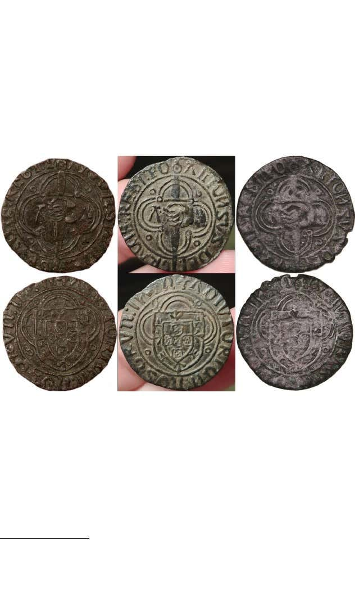

Os falsificadores de moedas e aqueles que introduzem as falsificações no mercado têm traços característicos e comuns, que os anos de experiência me têm levado a reconhecer com cada vez maior facilidade. Batem sempre o pé até à última, insistindo em histórias mirabolantes, nunca se deixando derreter, quer por dúvidas, quer por evidências.
Há uns tempos, o sr. Alberto Silva vendeu o espadim do meio (por uma pequena fortuna para o tipo monetário em causa), afirmando que o tinha retirado da terra...
Ora, como pode o sr. Alberto Silva descalçar esta bota? Que outra alternativa lhe resta senão o mergulho absoluto no obscurantismo? E que melhor solução terá, para esse efeito, do que levar à praça um dos clones (moeda da direita) na sua leiloeira, catalogado como falso da época?
A tirada é brilhante, mas pelo menos põe termo a uma série de questões prévias...
Ou seja, o senhor Alberto Silva e a sua equipa de mercenários, admitem pela primeira vez que a moeda não corresponde ao estilo oficial das emissões de D. Afonso V. E vai daí, num salto brilhante, imediatamente concluem que é falsa da época, despachando assim o assunto sem maiores delongas.
Joco...
Então mas como poderia ser a dita falsa actual, se o Sr. Alberto Silva, homem de palavra e detectorista afincado, jurou já a pés juntos que a tirou da terra?
(Faz quase lembrar a história do outro que as tira do rio...)
Que confusões senhores...
Expliquem lá, se conseguirem, como é que aparecem três clones na actualidade?
E expliquem lá, se conseguirem, como é que se processava o negócio da falsificação de moedas no séc. XV? Encontrem uma única falsificação da época de uma moeda de bolhão com 12,5% de prata?
Suspiro...
Oh criaturas...
Ou se forravam, ou se branqueavam...
Quem mete dinheiro e meio de prata numa falsificação de bolhão, são os falsificadores actuais. Mais ninguém...
E isto, meus caros, é um axioma. 🙃